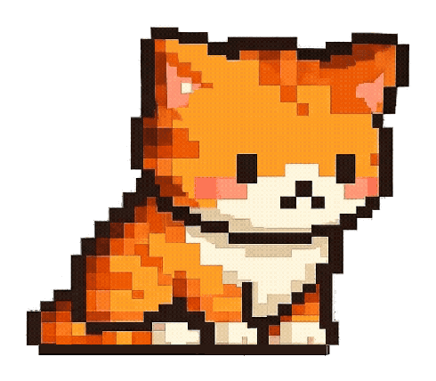
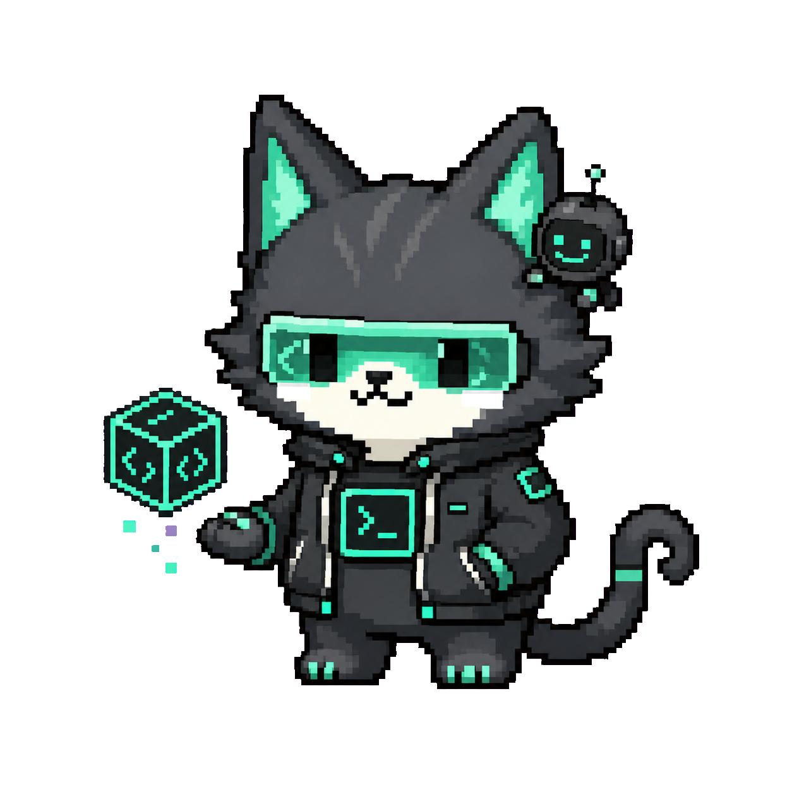

Workspace
작업 대화를 열어 둔 채 AIN에게 묻기
왼쪽 하단 AIN 카드의 말풍선을 누르면 옆에 대화 칸이 열립니다. 작업 대화는 중앙에 둔 채, 다음에 확인할 것을 AIN에게 물어봅니다.
DAP v1.7.1 · Preview
DAP은 대화만 하는 펫이 아닙니다. AIN과 이야기한 요청이 파일 확인, 문서 편집, 터미널과 자동화 작업으로 이어지는 데스크톱 작업 공간입니다.
아직 공개 설치본이 없습니다 · 다음 공개 빌드는 macOS Apple Silicon부터 준비 중
Inside DAP
Workspace에서는 대화를 이어가고, Crew에서는 프로젝트의 터미널과 변경 파일을 함께 봅니다. 두 영상 모두 DAP 개발 빌드를 직접 실행해 녹화했습니다.
왼쪽 하단 AIN 카드의 말풍선을 누르면 옆에 대화 칸이 열립니다. 작업 대화는 중앙에 둔 채, 다음에 확인할 것을 AIN에게 물어봅니다.
프로젝트 폴더에서 터미널을 열어 Git 상태를 확인합니다. 변경 패널에서 파일을 선택하면 어떤 줄이 바뀌었는지 터미널 옆에서 볼 수 있습니다.
Meet AIN
AIN은 DAP의 기본 AI 친구입니다. 작업을 시작하면 상태가 바뀌고, 완료된 결과와 다음 요청을 같은 대화에서 이어갑니다. Crew에서는 프로젝트를 조율하는 친구의 이름으로도 나타납니다.

DAP overview
v1.7.1은 Workspace와 Crew를 오가며 대화, 문서, 파일, Git과 터미널 작업을 이어갑니다. 여러 Claude·Codex·Antigravity 계정을 프로젝트별로 고정하고, 창을 닫으면 바탕화면 펫으로 돌아갑니다.
Core features
Windows에서는 Ctrl+Shift+Space, macOS에서는 Cmd+Shift+Space로 어디서든 실행창을 열어 DAP에게 요청합니다.
이미 로그인한 Claude 또는 Codex를 연결해, 따로 API Key를 입력하지 않고 바로 사용할 수 있습니다.
텍스트 선택 퀵액션은 기본 꺼짐입니다. 설정에서 켜면 선택한 문장 가까이에서 다듬기, 번역, 요약, 질문과 웹 검색을 실행할 수 있습니다. 기존에 저장한 설정은 유지됩니다.
기본 고양이부터 플러그인 캐릭터까지, 선택한 외형이 작업·생각·기쁨 같은 상태를 보여줍니다. 말투 적용 여부는 외형과 별도로 선택할 수 있습니다.
Preview in v1.7.1
대화 중심 Workspace와 프로젝트 중심 Crew를 오가며 진행 중인 작업과 입력을 그대로 이어갑니다.
제공자별 여러 계정을 등록하고 Workspace와 Crew에 선택한 계정을 고정합니다. 조용한 자동 전환은 하지 않습니다.
Markdown, DOCX, HWPX, XLSX, PPTX와 웹 문서를 대화 옆에서 열고 편집하거나 미리 봅니다.
Crew에서 프로젝트, worktree, 파일, Git과 터미널을 한 흐름으로 연결하고 작업 기록을 프로젝트별로 유지합니다.
완료 알림에서 관련 세션으로 돌아갑니다. 방해 금지, 이전 실행, 오프라인 이후에도 작업 맥락을 복원합니다.
Crew의 메인 오케스트레이터가 프로젝트 작업을 나누고 이어줍니다. 기본 친구는 AIN이며 선택한 펫 이름을 사용합니다.
Actual interface
기능 목록이 아니라, 앱에서 일을 시작하고 확장하는 순서대로 소개합니다.
목록 접기, 최근 작업, 앱과 설정으로 이동합니다. 작업 모드를 바꿔도 같은 자리에 남습니다.
대화 중심 Workspace와 프로젝트 중심 Crew를 상단 전환 메뉴에서 오갑니다.
프로젝트와 모드를 정하고, 입력창에서 Claude·Codex·Antigravity 계정을 선택해 요청합니다.
문서, 인앱 브라우저와 Crew 터미널을 대화 옆에서 열어 결과와 작업 맥락을 함께 봅니다.
v1.7.1 · 개발 미리보기
2026년 11월 19일 개발 브랜치 기준입니다. 아직 공개 설치본이 없으며, 웨이팅리스트에서 다음 공개 빌드 소식을 받을 수 있습니다.
화면 전환·숨김·최소화 중에도 진행 중인 실행과 입력 초안을 유지하는 작업 흐름을 준비하고 있습니다.
현재 친구와 연결된 Claude·Codex·Antigravity 구독 모델을 선택하고 기존 CLI 로그인을 사용합니다.
친구의 말투·개인 기억을 이어가며 업무 기록을 프로젝트별로 관리합니다. worktree·파일·코드·Git·터미널·협업 전달을 한 작업 흐름으로 연결합니다.
문서 미리보기·편집기와 인앱 브라우저 탭을 한 작업창에 둡니다. Office 네이티브 미리보기는 준비 중입니다.
다음 공개 빌드는 macOS Apple Silicon부터 준비합니다. Windows 후속 공개 일정은 아직 확정되지 않았습니다.
개발 상태와 플랫폼 지원 문서 보기Early access
DAP은 아직 공개 전입니다. 다음 공개 빌드는 macOS Apple Silicon부터 준비하며, Windows 일정은 이후 안내합니다.
사이트가 정보를 저장하지 않습니다. 기본 이메일 앱에서 신청 메일을 보내는 방식입니다.
Pet states
Custom mini pets
미니 모드에는 Claude, Codex, Gemini 캐릭터가 기본 프로필로 들어 있습니다. 평소 모습과 반응 모습을 직접 등록하고 크기도 조절할 수 있습니다.

캐릭터 프로필은 설정에서 추가·수정·삭제할 수 있으며, 연결한 AI와 별개로 선택할 수 있습니다.
Next steps
설치 후 바로 쓰는 기본 흐름부터, 필요할 때 더해 쓰는 확장 기능까지 한눈에 둘러볼 수 있습니다.
이메일로 출시 알림을 신청합니다. 사이트에는 이메일 주소가 저장되지 않습니다.
Workspace, Crew, 여러 AI 계정과 문서 작업 공간 등 v1.7.1의 준비 상태를 확인합니다.
macOS Apple Silicon 공개 빌드부터 안내하고 Windows 일정은 준비되는 대로 공유합니다.
DAP은 Workspace와 Crew, 문서·프로젝트 작업과 데스크톱 펫을 이어주는 AI 작업 환경입니다. v1.7.1은 아직 공개 전입니다.
Workspace는 실행 요청과 승인·취소를 한 흐름으로 보여줍니다. 도구가 승인을 요청하면 내용을 확인한 뒤 선택하고, 진행 중인 작업은 취소할 수 있습니다.
v1.7.1 프리뷰는 Claude, Codex, Antigravity 제공자별 여러 계정을 등록하고 Workspace와 Crew에 선택한 계정을 고정하는 흐름을 준비하고 있습니다.
플러그인 페이지에서 DAP에 더해 쓸 수 있는 확장 기능을 둘러볼 수 있습니다.